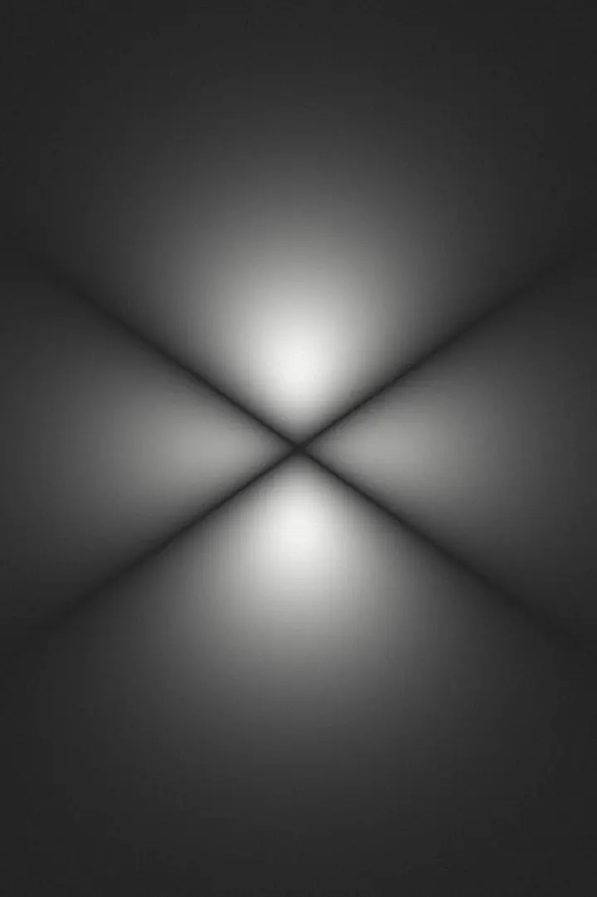
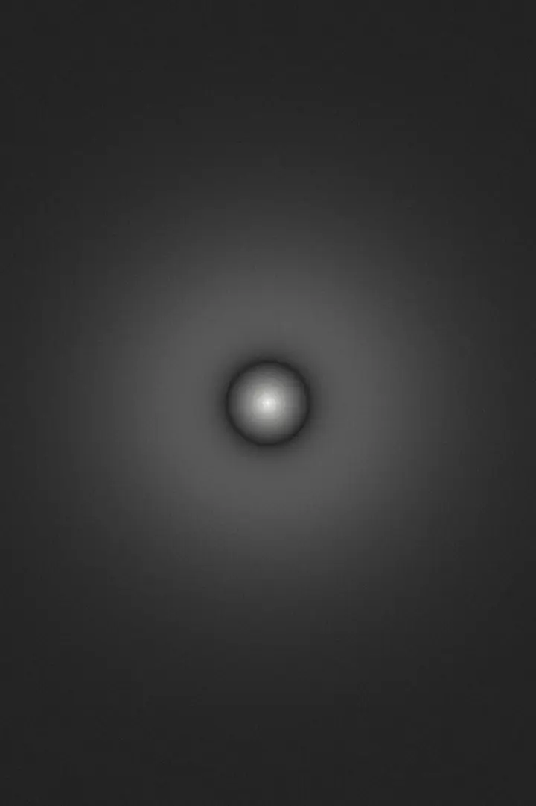
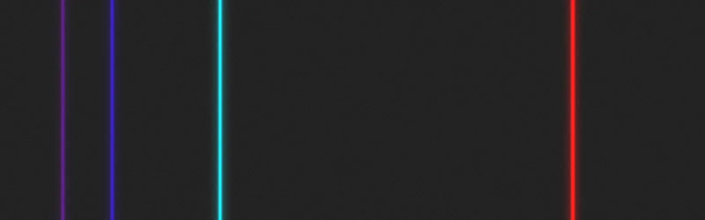
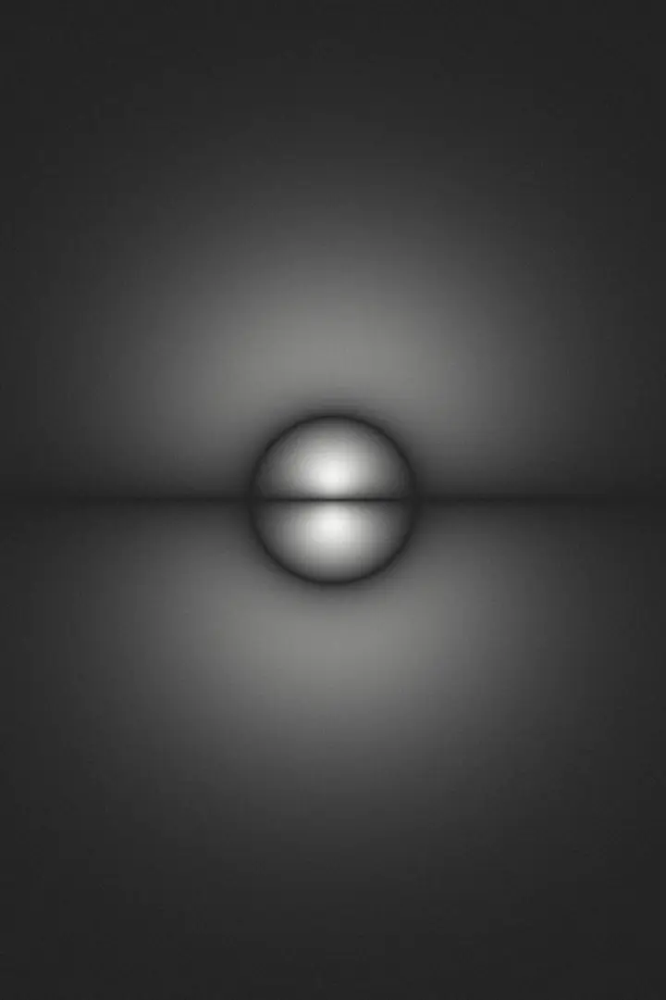

Honors Chemistry 2, day by day: a summary of every video and handout, key terms, common mistakes, worked problems and a practice quiz for every class.
It covers every folder below, from the flame test to photoelectron spectra. Work one folder a day and take its quiz.
Light arrives in packets and every element gives off its own lines  
Key terms from every folder, plus the equation sheet. Flip a card, then say whether you knew it. Cards you miss come back a few cards later.
On a keyboard: Space flips, → for knew it, ← for again.
You knew every card in this deck.
Pick a transition or type a wavelength. The numbers use the constants from your equation sheet, so you can check homework answers step by step.
Falling from n = 4 to n = 2 gives off a blue-green photon. Rising from 2 to 4 absorbs the same one.
Four checks for the parts of the module that are easiest to get wrong. Use them to confirm homework, not to skip it.
Type a symbol, a name or an atomic number. Ions work too: cations lose electrons from the highest n first.
Every value is offered, including ones that break the rules, so you can test sets from a worksheet.
Swipe the table sideways to see all of it.
Pick one element to read its values, then a second to compare the two.
Numbers can be typed as 3.6e-19 or 3.6 × 10^-19. The constants match the equation sheet.
Constants are given on quizzes and tests. Know what each variable means and which equation links the two quantities you have.
| Property | Across a period (→) | Down a group (↓) | Why |
|---|---|---|---|
| Atomic radius | Decreases | Increases | Across: more protons, same core shielding, so higher Zeff pulls the shell in. Down: a new shell farther out. |
| First ionization energy | Increases (dips at B and O) | Decreases | Higher Zeff and smaller r mean a stronger Coulomb attraction to the electron removed. |
| Electron affinity | Generally more energy released (exceptions: Be, N, noble gases) | No clean trend | A higher Zeff attracts the added electron more strongly. |
| Electronegativity | Increases | Decreases | Same reasoning as ionization energy, for electrons shared in a bond. F is highest. |
| Metallic character | Decreases | Increases | Low ionization energy means electrons are given up or shared easily. |
| Ion size | Cation smaller than its atom; anion larger. Isoelectronic ions: more protons, smaller ion. | Fewer electrons per proton (or a lost shell) pulls the cloud in. | |
Where does this come from? The Module 5 calendar page on Canvas, the transcripts of its linked videos, and the Canvas handouts. The day order follows the calendar exactly.
Which videos had no transcript? 14.a “Paramagnetism and Diamagnetism of N2 and O2” and “Preparing Penny Solution”. Their notes come from the video titles and general chemistry knowledge.
Which handouts were used? Module 5 Goals, Reading Notes, Practice Problems and their key, both slide decks, the Flame Test Lab and its makeup sheet, the Copper Penny Lab, the PES worksheet, the Additional PES Questions key, and the Module 5 Review and its key. Only the Atomic Can Game could not be opened.
How should I check my answers? Each folder ends with worked problems from the handouts; tap one to see the answer. The full keys are on the Canvas Resources page. The spectrum check above confirms any hydrogen-line calculation.
Why is one folder marked skipped? The calendar skips the Quantum Numbers row. Its objective can still show up on the exam, so its summary and quiz are kept.
Does the guide remember my answers? No. Each quiz starts fresh when you open a folder; use Reset to try one again.